Created: 12/Oct/2017
By: VectorCoder
Email:
vectorcoder@hotmail.com
Thank you for purchasing. If you have any questions that are beyond the scope of this help file, please feel free to email via my user page contact form Or we also provide support through our website support panel. Thanks so much!
First of all you need to setup your ecommerce store admin panel. Please follow step by step instructions below.
The Laravel framework has a few system requirements. Of course, all of these requirements are satisfied by the Laravel Homestead virtual machine, so it’s highly recommended that you use Homestead as your local Laravel development environment.
However, if you are not using Homestead, you will need to make sure your server meets the following requirements:
Make Sure you got the server that fulfill above all requirements.
Now open the folder name ( Laravel CMS Source Code) inside the downloaded package.
Inside the folder you will find all the server side code.
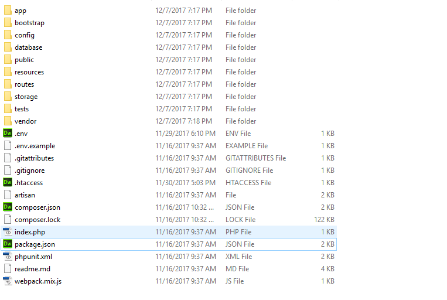
Open folder with name Database inside downloaded package. Goto Phpmyadmin And import the .sql file to your sql database.
Now open .env file inside the Laravel CMS Source Code folder and change the following
Now open config/mail.php file inside the Laravel CMS Source Code folder and change MAIL_FROM_ADDRESS and MAIL_FROM_NAME
'from' => [
'address' => env('MAIL_FROM_ADDRESS', 'hello@example.com'),
'name' => env('MAIL_FROM_NAME', 'Example'),
],
Now upload all files to the root of your domain.
Now Open link http://your-domain/admin/login
username: demo@ionic.com
password: admin
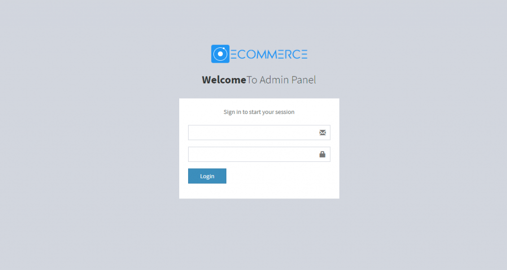
General Settings
After Login go to the Site Setting section. And change the settings according to your requirement.
To get facebook id and secret id please follow this link
To get sender id and app key please visit
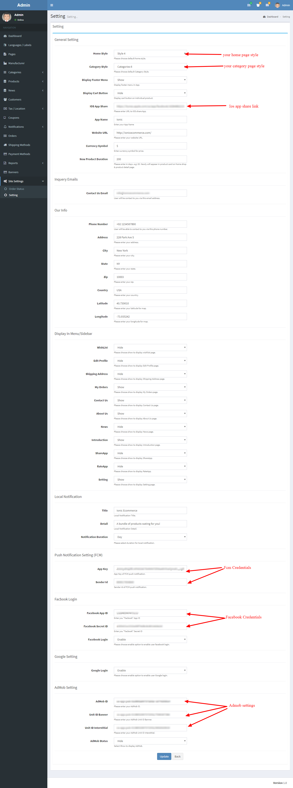
Setting Shipping Methods
Go to the shipping methods section from the admin panel and setup your shipping methods.
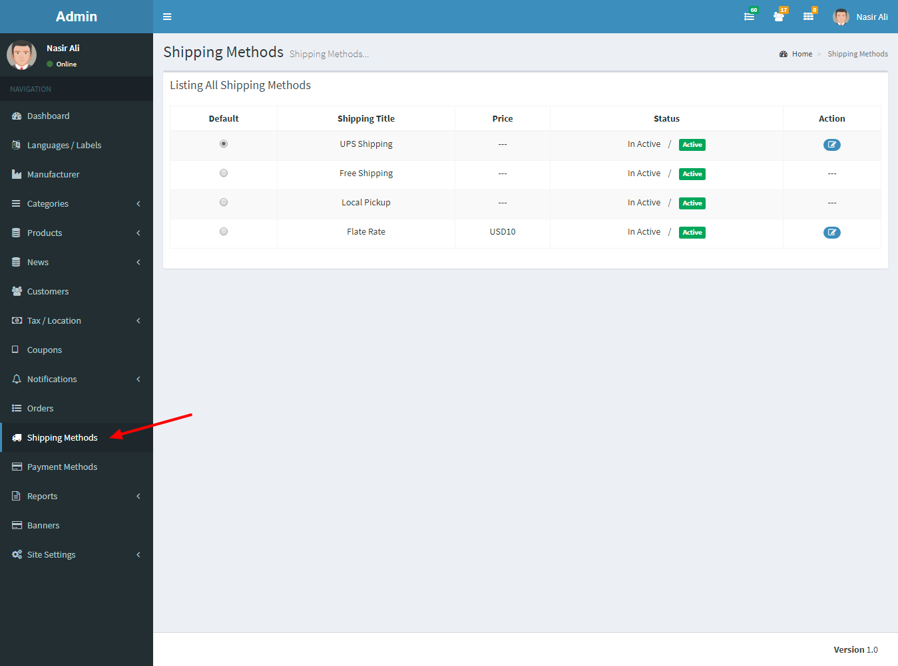
Setting Payment Methods
Go to the Payment Methods section from the admin panel and setup your desire payment methods.
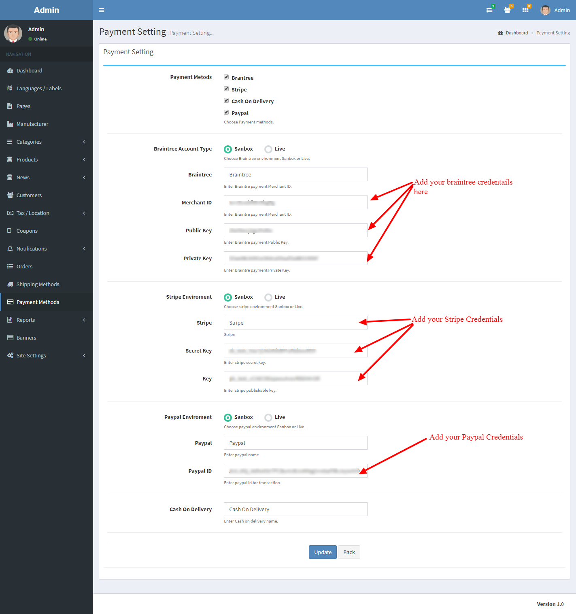
After CMS installation, please follow below instructions to set up your mobile application.
Application is build and tested using the
It is recommend to use the environment with above Specifications. But You can install latest version of Ionic.
To install Ionic Please Follow Below LinkNow open the folder name ( App Source Code) inside the downloaded package.
Inside the folder you will find all the ionic application code.
Open your project folder and open file “ config.xml“. This file has all the configuration that is used to built your apk and ipa file.
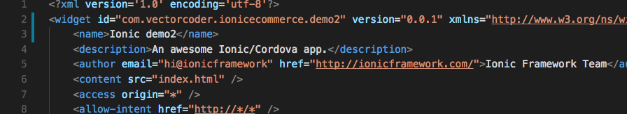
The id inside widget tag contains package name of the application that must be unique for every application in world ( com.vectorcoder.ionicecommerce.demo2) and the other one is your application name that will be shown when application is installed ( Ionic demo2).
Now open project folder/src/providers/config.ts file and change the application http://your-site-url. It will be the url of your domain. It will load CMS products data into your application.
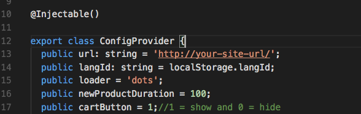
Now open project folder/src/providers/translate.ts file and change the application http://your-site-url. It will be the load taranslation from the cms.
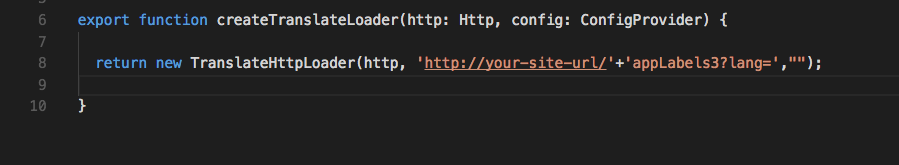
Now we are ready to go further.
Open your project directory and ‘ right click’ on white space while holding ‘Shift’ button and select option “ Open command window here”.
For example we have project name “ ionicshop_laravel_demo1“. We will open this folder and right click on white space while holding shift key. Now select “Open command window here”.
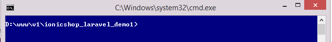
Now you have cmd opened with your project directory path loaded.
Hence the enviroment is change it is recommended to rebuild the sass. Type in cmd “ npm rebuild node-sass”
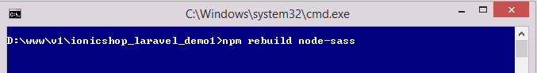
Before moving further you have to remove and add some plugins(Google Plus Plugin & CordovaPushV5 Plugin) with your credentials.
Google Plus Plugin
You have to create the google app and get the REVERSED_CLIENT_ID
Please visit below link
Now we have reserved client id we can move forward.
Add Plugin Using below code
Facebook Login Plugin
Add Plugin Using below code Using your app id and app name
FCM Push Notification Plugin
Admob Plugin
Plugin is implemented in the applciation but you have to enable the ads from CMS.
For this You have to run command in cli.
Now type “ionic serve” this will run the app into your browser.
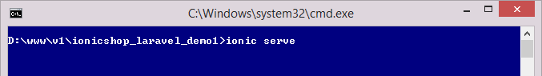
Note: plugins will only work in mobile app.
To generate and upload application on play store and iPhone store follow the instructions on below link.
Q1 : How to Change assets Inside application ?
Ans : assets are very easy to change open app/src/assets folder contain all the icons images and other assets used in app you can change them as you like.
Q2 : How to Change icon and splash screen ?
Ans : to change the application icon and splash screen please visit.
Q3 : How to Change intro slides of Application ?
Ans : Intro slides are present inside app/src/assets/intro folder contain the images of intro slides change them according to your requirement.
Q4 : How to Add New Language ?
Ans : We are using angularjs translate service. We can easily add as many as translations we need. Its very easy every thing is controllable from the CMS(admin panel). Add as many as you want to add languages.
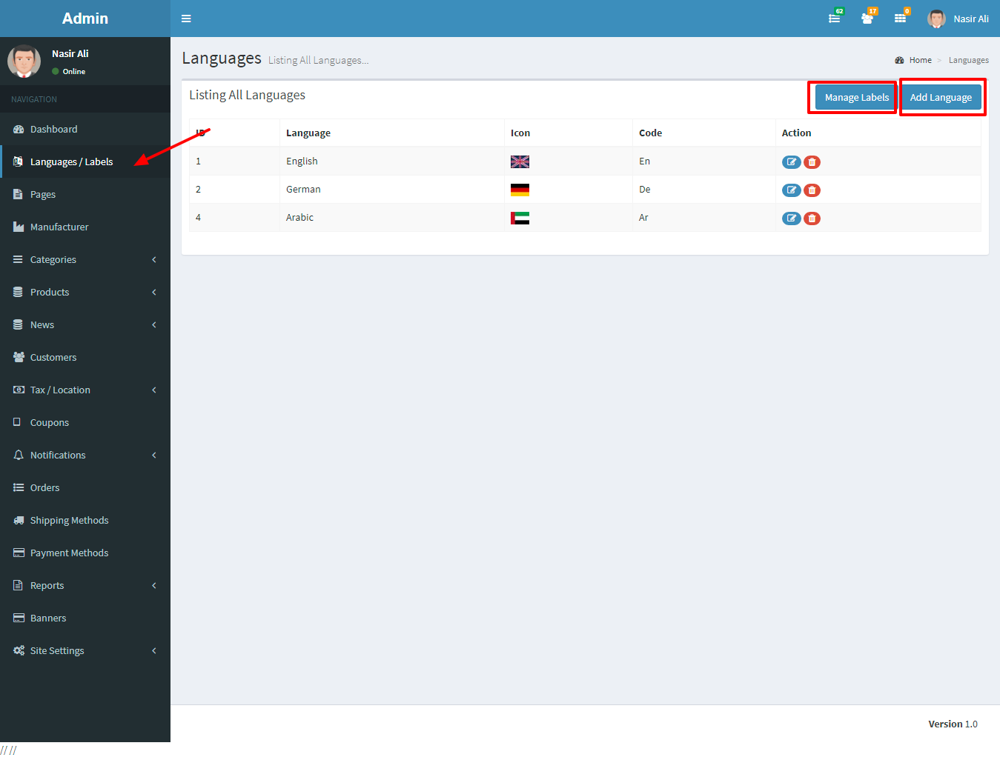
Q5 : How to Home page and Category Page ?
Ans: Home Page nad Category page can be changed from the cms easily.
Q6 : How to change the Theme and Colors Using sass?
Ans:
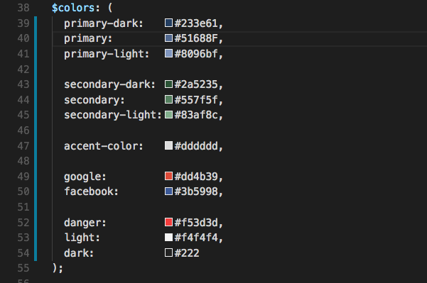
$positive is used to change
top bars
$dark is used on
side panel color while
$accent-color, $accent-color-light, $accent-color-dark is used on
buttons ,text high light badges.